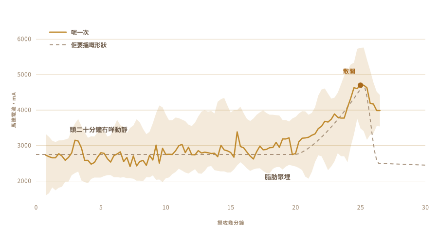

01
我只係食過，從來冇做過
我識嘅印度酥油係由村入面出嚟嘅。裝喺一啲執返嚟再用嘅玻璃瓶，做佢嘅人用同一套方法做咗咁多年，做到嗰頭冇人覺得佢係一門手藝。
同舖頭嗰啲鐵罐裝嘅味道唔同。
但我一批都未做過。奶要擺幾久，乳酪要幾凍，煮到夠嗰陣個鍋應該有咩聲，我一樣都唔知。
02
起點係乳酪，唔係忌廉
工廠做嘅酥油大多數由忌廉開始。傳統做法要早一日，有時早兩日，先將忌廉，其實係煮到濃嘅全脂奶，落菌種做成乳酪，擺一晚等佢變酸。
變酸呢一步係關鍵。省咗佢，你手上得到嘅只會係澄清牛油。嗰樣都好食，但唔係酥油。

03
喺枱面擺兩日
暖奶，拌一匙昨日嘅乳酪入去，之後就唔好再掂佢，擺一整晚畀啲細菌自己做嘢。我自己嗰啲擺咗兩日。
呢個就係發酵，亦係商業版本省咗嘅一步。活菌，主要係乳酸桿菌，慢慢食晒啲乳糖，變成乳酸。奶變稠。變酸。到第二朝，佢已經係另一樣嘢。
所有好處都係由呢度嚟。乳糖拆散咗，落肚舒服啲。脂肪同蛋白質更容易吸收。仲有丁酸，你腸壁真正靠嚟運作嘅短鏈脂肪酸，咁樣做出嚟嘅酥油，比用新鮮忌廉快手打出嚟嘅多。
阿育吠陀開嘅方，一路以來講嘅都係呢一種。
我講得出嘅就係，陣香係啲菌種帶出嚟嘅。而嗰陣香，就係值得搞成件事嘅大半個理由。

04
呢個做法有個名
Bilona。乳酪倒入鍋，放一支木攪棒落去，然後一來一回咁拉，拉到牛油頂唔住，浮上嚟。
攪棒係我自己做嘅。網上搵到嘅全部都係黏埋嘅，又冇一間肯講用嘅係乜膠。嗰樣嘢要喺你嘅食物入面浸半個鐘，我唔會靠估嘅。硬木，不鏽鋼螺絲，裝喺一條我抽屜本身就有嘅攪拌軸上面。
四條臂，一個鋼箍箍到正。全部都係螺絲，所以隨時拆得返。


成件事大概要半個鐘，而當中大部分時間都冇咩好睇。所以佢正係你會幻想交畀其他嘢去做嘅工。

05
於是我問
真正識做呢樣嘢嘅人唔會照食譜做，而佢哋一個都唔喺我廚房。所以問題全部打落一個對話框。
要發酵幾久。乳酪要保持幾凍。轉速可以快到幾多，而唔會因為摩擦焗熱個鍋，整壞牛油。每個答案又打開三條新問題。
然後我問咗真正想問嗰條。你可以索性幫我做埋？
問題唔再係我要點樣做酥油。而係你可唔可以幫我做。
06
野獸
一把充電電鑽。攪棒嚟自抽屜同五金舖。電子嘢裝喺一個塑膠食物盒，一塊砧板做脊骨，再加一個好大嘅黃色停止掣，因為凡係有馬達嘅嘢都應該有一個嘅。
佢幾乎冇花錢，而且睇落都唔似花過錢。而呢樣就多多少少係重點。

- 馬達充電電鑽，用夾鉗夾住
- 攪棒硬木同不鏽鋼，自己做，唔係買
- 腦Raspberry Pi，每秒記錄一次
- 感覺攪嗰陣睇馬達電流，煮嗰陣睇溫度探針
- 停一個大掣，硬線接去切電
07
攪得轉係容易嘅部分
攪乳酪人人都做得到。難嘅係知幾時要停。
停得早，得到嘅係一堆厚厚嘅泡。攪過龍，就會將牛油打返落牛油奶入面，白白嘥咗。嗰個窗口會隨住脂肪、溫度，同埋當日嘅狀況走嚟走去。
冇人靠計時做呢步。要靠聽。啲聲由順暢嘅打旋變成高低唔齊嘅拍打，就係伸手入去嘅時候。

08
一種感覺，就只有一種
所以我只畀咗佢一種感覺。佢睇住馬達拉得有幾辛苦。
頭二十分鐘，乜都冇。負載停喺 2700 mA 左右，上上落落。跟住脂肪開始聚埋，電鑽要推開啲更稠嘅嘢。負載爬到 4700，喺上面頂咗一陣，然後牛油放開啲水，負載就跌落嚟。
冇鏡頭，冇模型，冇任何聰明嘅嘢。一個數字升上去，然後跌落嚟。

09
佢自己停咗
佢一路轉。我走開做其他嘢，返嚟嗰陣佢已經自己熄咗。
淺黃色嘅牛油粒浮喺濁濁嘅牛油奶入面。冇人話過時間畀佢。佢係由唯一感覺得到嘅嘢自己算出嚟。

10
之後又輪到用手
將牛油粒收埋，搓成一團。用冷水沖，沖完再沖，沖到水唔再濁為止。
留落嚟嘅每一滴牛油奶，下一步都會燒燶。呢一段我冇自動化，亦唔想自動化。


11
第二種感覺
馬達負載話畀呢套嘢知幾時要停。煮就係另一個問題，因為今次你搵嘅唔係一個瞬間，而係要守住一個狀態。
於是個鍋擺上電爐，入面插住一支溫度探針，再加一個 AC 調壓器，將爐開開關關，將個數字守喺你擺落嘅位置。我設成 250 F，大約攝氏 121 度，佢就喺嗰度停咗差唔多一個鐘。
一個人盯住一個鍋一個鐘，一定會遊魂。調壓器唔會覺得悶。

12
睇咗一個鐘顏色
牛油落鍋，之後基本上就自己行。
佢溶。佢起一堆又白又響嘅泡。水煮乾，聲就慢慢靜落嚟。乳固體沉底變褐，陣味由牛油變成一種烘過嘅味。等個鍋靜咗，液體變清，就做好。
我都睇咗大半，因為呢樣嘢好睇。但我做過嘅任何事都冇改變佢最後點樣。


13
酥油
清，琥珀色，聞落就係我細個食開嗰啲玻璃瓶嘅味。嗰個係我唯一有嘅測試，而佢過關。

入瓶嗰陣佢仲暖，仲清。到第二日，佢凝成淺色，有粒粒。
我幫佢哋貼咗標籤。上面嗰個字係尼泊爾文嘅酥油，旁邊嗰個 QR code 會帶你返呢一頁。

我做過嘅第一批。其實又唔算係我做嘅。
14
第二次係九瓶
第一次做出兩瓶，就得咁多咋。今次就擺滿咗成條欄杆。
九瓶。最近鏡頭係兩個高身嘅旋蓋瓶，中間六個扣蓋瓶，最遠嗰條柱邊仲有一個細嘅。

標籤而家唔同咗。最早嗰兩瓶貼嘅係粉紅色紙標籤，頂上印住 OUR STORY。呢啲係透明貼膜，所以酥油會由字後面透出嚟，而旁邊嗰個碼照樣會帶你返呢一頁。


佢凝成同第一批一樣嘅淺黃色，呢點我本來冇把握。
15
下一步我想要乜
而家呢部機知兩樣嘢。幾時停手唔攪，同埋要守住幾多度。
跟住我想畀佢眼同耳。一個鏡頭，畀佢自己睇住啲泡散開、固體變褐，自己揀火力，而唔係守住一個我交畀佢嘅數字。仲有一支咪，因為判斷酥油做好未，好大部分靠嘅係個鍋靜落嚟。
電鑽大概仲做得第二份工。牛油一落鍋就要攪，而嗰度本來就擺住一個閒住嘅馬達。
然後就係個循環。改發酵時間，改轉速，試吓出嚟係咩味，留住有用嘅，再嚟一次。做三十次，佢會落喺一個我根本想都唔會想去睇嘅地方。
反正我一直都唔知應該望邊度。
佢用乜砌成，感應喺邊度發生，同埋呢套嘢真正盯住嘅係乜。